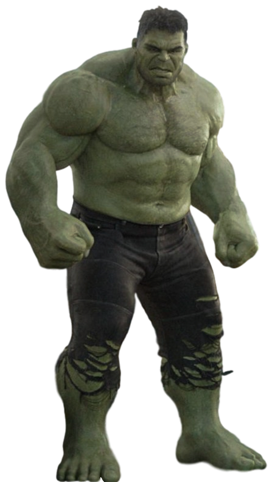
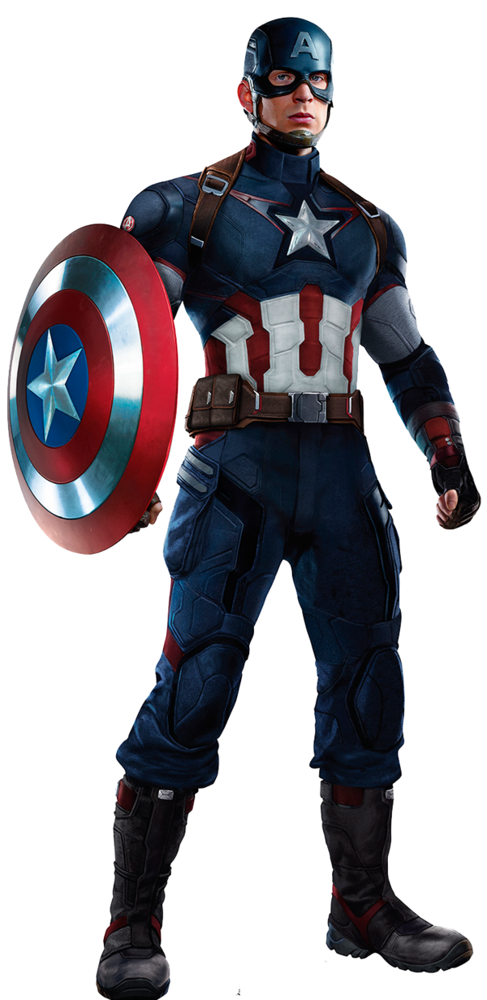

Doctor Robert Bruce Banner, M.D., Ph.D., is a renowned scientist and a founding member of the Avengers. Highly respected for his work in biochemistry, nuclear physics, and gamma radiation, he was commissioned by Thaddeus Ross to recreate the Super Soldier Serum which created Captain America, although Ross elected not to inform Banner what he was creating. However, when an exposure to high levels of gamma radiation instead of vita radiation went awry, the mild-mannered scientist had found that when angered, provoked or excited, he would transform into the huge, rage-fueled, nearly mindless creature known as Hulk.
Hulk
Captain America
Thor

Hawkeye

Captain Steven Grant "Steve" Rogers is a World War II veteran, a founding member of the Avengers, and Earth's first known superhero. Rogers grew up suffering from numerous health problems, and upon America's entry into World War II, he was rejected from serving in the United States Army despite several attempts to enlist. Rogers ultimately volunteered for Project Rebirth, where he was the only recipient of the Super Soldier Serum developed by Abraham Erskine under the Strategic Scientific Reserve. The serum greatly enhanced Rogers' physical abilities to superhuman levels. After Erskine's assassination and being doubted by SSR head director Chester Phillips, Rogers was relegated to performing in war bond campaigns, where he posed as a patriotic mascot under the moniker of Captain America
Thor Odinson is the Asgardian God of Thunder, the former king of Asgard and New Asgard, and a founding member of the Avengers. When his irresponsible and impetuous behavior reignited a conflict between Asgard and Jotunheim, Thor was denied the right to become king, stripped of his power, and banished to Earth by Odin. While exiled on Earth, Thor learned humility, finding love with Jane Foster, and helped save his new friends from the Destroyer sent by Loki. Due to his selfless act of sacrifice, Thor redeemed himself in his father's eyes and was granted his power once more, which he then used to defeat Loki's schemes of genocide.
Clinton Francis "Clint" Barton, also known as Hawkeye, is a skilled marksman, a former special agent of S.H.I.E.L.D. and one of the founding members of the Avengers. Known for his use of the bow and arrow as his primary weapon, Barton had become one of the best agents of S.H.I.E.L.D., responsible for the recruitment of Black Widow, whom he developed a strong friendship with. Assigned by Nick Fury into watching over the Tesseract, he was brainwashed by Loki and used as his pawn for all his evil schemes. However, following their Attack on the Helicarrier, he was freed from Loki's mental controls by Black Widow and joined the Avengers to fight against Loki's Chitauri army in the Battle of New York, ending Loki's Invasion, before Hawkeye had returned to his work as a S.H.I.E.L.D. agent